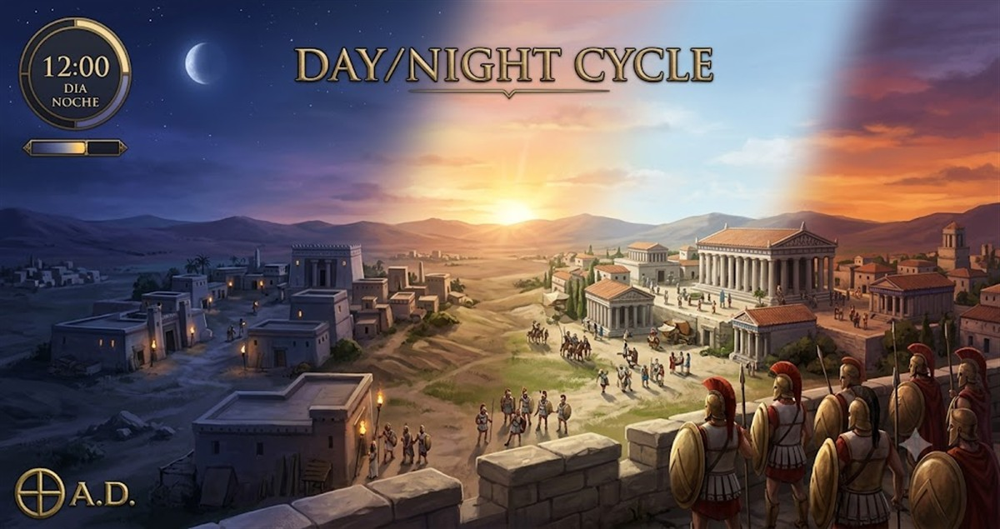

Day/Night Cycle
⬇️ Descargar Mod"Un tiempo que pasa, un mundo que vive"
Añade un reloj virtual al HUD que muestra la hora del juego (HH:MM) con su fase correspondiente: DIA, NOCHE, AMANECER o ATARDECER. Además, aplica un tinte de color sobre toda la pantalla que cambia según la hora — azul oscuro de noche, amanecer cálido, día brillante y atardecer naranja.
📝 Descripción Detallada
El mod Day/Night Cycle añade un indicador visual completo del ciclo día/noche en 0 A.D. Consta de dos elementos principales:
1. Reloj virtual en el HUD: Muestra la hora actual del juego en formato HH:MM junto con la fase del día (DIA, NOCHE, AMANECER, ATARDECER). Un ciclo completo dura 1440 segundos de simulación, equivalente a 24 horas de juego a velocidad 1x. El ciclo comienza a las 8:00 (8 AM).
2. Tinte de color a pantalla completa: Aplica un overlay de color sobre toda la pantalla que cambia suavemente según la hora virtual. De noche la pantalla se tiñe de azul oscuro, al amanecer de marrón cálido, durante el día es casi transparente y al atardecer se vuelve naranja.
✨ Características Principales
- Reloj en el HUD: Muestra la hora virtual en formato HH:MM con la fase actual
- 4 fases del día: NOCHE (0:00-6:00 y 20:00-24:00), AMANECER (6:00-8:00), DIA (8:00-18:00), ATARDECER (18:00-20:00)
- Tinte de color dinámico: La pantalla se tiñe según la hora (azul de noche, naranja al atardecer)
- Ciclo de 24 minutos: Un día completo dura 1440 segundos a velocidad 1x
- Se puede activar/desactivar: Usa el hotkey
daynightcycle.toggle - Sin afectar el rendimiento: El overlay es ligero y no interfiere con el juego
🎯 ¿Qué Esperar de Este Mod?
Con este mod podrás:
- Saber exactamente qué hora es en el juego sin adivinar
- Disfrutar de transiciones visuales suaves entre día y noche
- Vivir una experiencia más inmersiva con la atmósfera visual del ciclo
Nota: El mod es puramente visual. No afecta la mecánica de juego, las estadísticas de las unidades ni la eficiencia de ninguna acción.
🔍 ¿Dónde Encontrarlo en el Juego?
Reloj: Se muestra como un contador en la barra de sesión del HUD, junto a otros indicadores del juego.
Tinte de color: Se aplica como un overlay que cubre toda la pantalla (superpuesto al juego).
Activar/desactivar: El mod registra el hotkey daynightcycle.toggle. Puedes asignarle una tecla en Opciones → Configuración de Teclas de 0 A.D. También puedes configurar gui.session.daynightcycle en la consola.
⚙️ Información de Compatibilidad
Nota: Los textos de las fases (DAY, NIGHT, DAWN, DUSK) usan el sistema de localización de 0 A.D. El idioma se cambia desde las opciones del juego.
📋 Instrucciones de Instalación
- Descarga el mod: Haz clic en el botón de descarga de arriba.
- Busca la carpeta de 0 A.D.: Generalmente está en:
- Windows:
C:\Users\[TuUsuario]\Documents\My Games\0ad\mods - Linux:
~/.local/share/0ad/mods - Mac:
~/Library/Application Support/0ad/mods
- Windows:
- Crea una carpeta para el mod: Si no existe, crea una carpeta llamada
daynight_cycledentro de la carpeta "mods". - Copia los archivos: Extrae el archivo descargado y copia su contenido dentro de la carpeta
daynight_cycle. - Abre 0 A.D.: Inicia el juego.
- Activa el mod: Ve a Opciones → Mods, busca "Day/Night Cycle" y actívalo.
- ¡Listo! El reloj aparecerá automáticamente en tu HUD.
👥 Créditos
Autor: freddyeleazar
Versión: 0.1.0
Licencia: GPL v2 (como 0 A.D.)